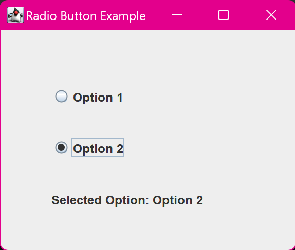

4. Java Program to Create 2 Radio Buttons and Display
Selected Button Label
import javax.swing.JFrame;
import javax.swing.JRadioButton;
import javax.swing.ButtonGroup;
import javax.swing.JLabel;
import java.awt.event.ActionListener;
import java.awt.event.ActionEvent;
class main {
public static void main(String[] args) {
JFrame frame = new JFrame("Radio Button Example");
JRadioButton radioButton1 = new JRadioButton
("Option 1");
JRadioButton radioButton2 = new JRadioButton
("Option 2");
// Group the radio buttons so only one can be selected
at a time
ButtonGroup group = new ButtonGroup();
group.add(radioButton1);
group.add(radioButton2);
JLabel label = new JLabel("Selected Option: None");
radioButton1.addActionListener(new ActionListener() {
public void actionPerformed(ActionEvent e) {
label.setText("Selected Option: Option 1");
}
});
radioButton2.addActionListener(new ActionListener() {
public void actionPerformed(ActionEvent e) {
label.setText("Selected Option: Option 2");
}
});
frame.setLayout(null);
radioButton1.setBounds(50, 50, 150, 30);
radioButton2.setBounds(50, 100, 150, 30);
label.setBounds(50, 150, 200, 30);
frame.add(radioButton1);
frame.add(radioButton2);
frame.add(label);
frame.setSize(300, 250);
frame.setDefaultCloseOperation(JFrame.EXIT_ON_CLOSE);
frame.setVisible(true);
System.out.println("Displayed two radio buttons, ready
to show selected option.");
}
}
